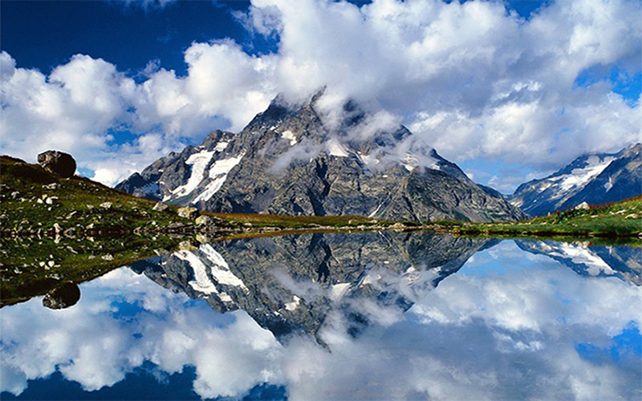

В этом походе вы побываете в Карачаево-Черкесской Республике, в местах, где когда-то проходил участок древнего шёлкового пути. В первой, высокогорной части маршрута, вы пройдёте через хребет Абишира-Ахуба, подниметесь на его высшую точку – вершину Джумаруклы-Тёбе (3182 м), преодолеете несколько категорийных перевалов, увидите множество озёр и сходите налегке, через перевалы Агур (3000 м) и Мылгвал (2800 м), к самому крупному из них – озеру Кяфар (2350 м). Во второй части маршрута вы побываете в долинах рек Архыз и София, здесь вас ждут удивительной красоты Софийские водопады и знаменитые озера – настоящие сокровища горного Архыза. Этот маршрут не прост, большие перепады высот и непредсказуемая погода могут стать настоящим испытанием для вас, но пройдя до конца вы с уверенностью сможете сказать, что видели Архыз и Западный Кавказ во всем их величии и великолепии!

Дмитрий Гусев
5 лет вожу группы по самым красивым местам страны. С меня организация и обеспечение вашей безопасности и комфорта, с вас - наслаждение отпуском.
Дистанция
85 км
Размер группы
18
Продолжительность
9 дней
Описание горного района
Высокогорная долина и одноимённый посёлок Архыз расположены в межгорной котловине, этот район на Кавказе нередко называют полюсом ясности. Горные хребты здесь достигают в среднем 2500 м высоты и надёжно защищают долину от ветров, в том числе и холодных северных, что создаёт особые условия, характеризующиеся малой облачностью, большим количеством солнечных дней, сухостью воздуха, отсутствием сильных ветров. Архыз – это жемчужина Западного Кавказа. Так его характеризуют за невероятное сочетание пышных лесов, заснеженных горных вершин, цветущих лугов и голубых озёр, лежащих в каменных чашах и наполненных бирюзовой прозрачной водой. Все они отличаются друг от друга по форме, цвету, размеру, составу воды, и каждое – впечатляет по-своему.

Стоимость участия 15500 ₽
Что входит в стоимость похода:
Прокат палаток
Питание
Трансфер
Аптечка
Работа гида-инструктора
НЕ входит в стоимость похода:
Билеты на самолет/поезд
Кафе
Личные расходы
Описание маршрута
Минеральные Воды – посёлок Архыз, трансфер
Группа встречается на ж/д вокзале в городе Минеральные Воды. Добраться сюда можно не только на поезде, но и на самолете. Далее организованным трансфером отправляемся в высокогорный посёлок Архыз. Дорога сюда займёт около 3,5 часов (около 220 км в пути), и к вечеру мы разобьём свой первый походный лагерь недалеко от самого посёлка, в сосновом бору на берегу чистой и холодной реки Большой Зеленчук. Первый день – день знакомства!
Скорей отправляй заявку, пока остались места!
Заполните форму и мы свяжемся с Вами!
Отправить заявку